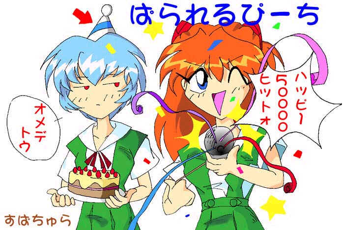

I´m back!
Defaced by Silver Lords!
Sorry, admin, nothing was dammaged! You must protect it better..
ScorpionKTX defacing again.... soooooo cutie....

Ae, queria pedir desculpas para o pessoal da www.hacker.com.br (por
tê-los chamado de HIIS)
Nunca tive interresse em ironizá-los (sei que rodam um Apache/1.3.9
em um Linux... muito bom, por sinal...)
Então... um abraço para o pessoal da HISS =)